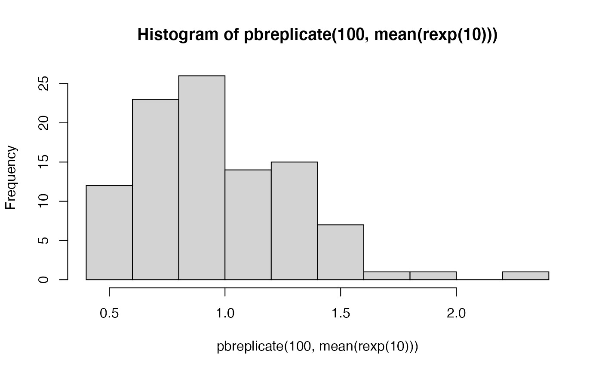

pbapply.RdAdding progress bar to *apply functions, possibly leveraging
parallel processing.
pblapply(X, FUN, ..., cl = NULL) pbapply(X, MARGIN, FUN, ..., cl = NULL) pbsapply(X, FUN, ..., simplify = TRUE, USE.NAMES = TRUE, cl = NULL) pbreplicate(n, expr, simplify = "array", cl = NULL) pbmapply(FUN, ..., MoreArgs = NULL, SIMPLIFY = TRUE, USE.NAMES = TRUE) pbtapply(X, INDEX, FUN = NULL, ..., default = NA, simplify = TRUE, cl = NULL)
| X | For |
|---|---|
| MARGIN | A vector giving the subscripts which the function will be applied over.
|
| FUN | The function to be applied to each element of |
| ... | Optional arguments to |
| simplify, SIMPLIFY | Logical; should the result be simplified to a vector or matrix if possible?
|
| USE.NAMES | Logical; if |
| n | Number of replications. |
| expr | Expression (language object, usually a call) to evaluate repeatedly. |
| cl | A cluster object created by |
| MoreArgs | a list of other arguments to |
| INDEX | a |
| default | (only in the case of simplification to an array) the value with which the array
is initialized as |
The behaviour of the progress bar is controlled by the option
type in pboptions,
it can take values c("txt", "win", "tk", "none",) on Windows,
and c("txt", "tk", "none",) on Unix systems.
Other options have elements that are arguments used in the functions
timerProgressBar, txtProgressBar,
and tkProgressBar.
See pboptions for how to conveniently set these.
Parallel processing can be enabled through the cl argument.
parLapply is called when cl is a 'cluster' object,
mclapply is called when cl is an integer.
Showing the progress bar increases the communication overhead
between the main process and nodes / child processes compared to the
parallel equivalents of the functions without the progress bar.
The functions fall back to their original equivalents when the progress bar is
disabled (i.e. getOption("pboptions")$type == "none" or dopb() is
FALSE). This is the default when interactive() if FALSE
(i.e. called from command line R script).
When doing parallel processing, other objects might need to pushed to the workers, and random numbers must be handled with care (see Examples).
Updating the progress bar with mclapply
can be slightly slower compared to using a Fork cluster
(i.e. calling makeForkCluster).
Care must be taken to set appropriate random numbers in this case.
Similar to the value returned by the standard *apply functions.
A progress bar is showed as a side effect.
Progress bar can add an overhead to the computation.
Progress bars used in the functions:
txtProgressBar,
tkProgressBar,
timerProgressBar
Sequential *apply functions:
apply, sapply,
lapply, replicate,
mapply, tapply
Parallel *apply functions from package 'parallel':
parLapply,
mclapply.
Setting the options: pboptions
Conveniently add progress bar to for-like loops:
startpb, setpb, getpb,
closepb
## --- simple linear model simulation --- set.seed(1234) n <- 200 x <- rnorm(n) y <- rnorm(n, crossprod(t(model.matrix(~ x)), c(0, 1)), sd = 0.5) d <- data.frame(y, x) ## model fitting and bootstrap mod <- lm(y ~ x, d) ndat <- model.frame(mod) B <- 100 bid <- sapply(1:B, function(i) sample(nrow(ndat), nrow(ndat), TRUE)) fun <- function(z) { if (missing(z)) z <- sample(nrow(ndat), nrow(ndat), TRUE) coef(lm(mod$call$formula, data=ndat[z,])) } ## standard '*apply' functions system.time(res1 <- lapply(1:B, function(i) fun(bid[,i])))#> user system elapsed #> 0.136 0.006 0.211#> user system elapsed #> 0.095 0.004 0.106#> user system elapsed #> 0.098 0.001 0.107#> user system elapsed #> 0.114 0.002 0.133## 'pb*apply' functions ## try different settings: ## "none", "txt", "tk", "win", "timer" op <- pboptions(type = "timer") # default system.time(res1pb <- pblapply(1:B, function(i) fun(bid[,i])))#> | | 0 % ~calculating |+ | 1 % ~00s |+ | 2 % ~00s |++ | 3 % ~00s |++ | 4 % ~00s |+++ | 5 % ~00s |+++ | 6 % ~00s |++++ | 7 % ~00s |++++ | 8 % ~00s |+++++ | 9 % ~00s |+++++ | 10% ~00s |++++++ | 11% ~00s |++++++ | 12% ~00s |+++++++ | 13% ~00s |+++++++ | 14% ~00s |++++++++ | 15% ~00s |++++++++ | 16% ~00s |+++++++++ | 17% ~00s |+++++++++ | 18% ~00s |++++++++++ | 19% ~00s |++++++++++ | 20% ~00s |+++++++++++ | 21% ~00s |+++++++++++ | 22% ~00s |++++++++++++ | 23% ~00s |++++++++++++ | 24% ~00s |+++++++++++++ | 25% ~00s |+++++++++++++ | 26% ~00s |++++++++++++++ | 27% ~00s |++++++++++++++ | 28% ~00s |+++++++++++++++ | 29% ~00s |+++++++++++++++ | 30% ~00s |++++++++++++++++ | 31% ~00s |++++++++++++++++ | 32% ~00s |+++++++++++++++++ | 33% ~00s |+++++++++++++++++ | 34% ~00s |++++++++++++++++++ | 35% ~00s |++++++++++++++++++ | 36% ~00s |+++++++++++++++++++ | 37% ~00s |+++++++++++++++++++ | 38% ~00s |++++++++++++++++++++ | 39% ~00s |++++++++++++++++++++ | 40% ~00s |+++++++++++++++++++++ | 41% ~00s |+++++++++++++++++++++ | 42% ~00s |++++++++++++++++++++++ | 43% ~00s |++++++++++++++++++++++ | 44% ~00s |+++++++++++++++++++++++ | 45% ~00s |+++++++++++++++++++++++ | 46% ~00s |++++++++++++++++++++++++ | 47% ~00s |++++++++++++++++++++++++ | 48% ~00s |+++++++++++++++++++++++++ | 49% ~00s |+++++++++++++++++++++++++ | 50% ~00s |++++++++++++++++++++++++++ | 51% ~00s |++++++++++++++++++++++++++ | 52% ~00s |+++++++++++++++++++++++++++ | 53% ~00s |+++++++++++++++++++++++++++ | 54% ~00s |++++++++++++++++++++++++++++ | 55% ~00s |++++++++++++++++++++++++++++ | 56% ~00s |+++++++++++++++++++++++++++++ | 57% ~00s |+++++++++++++++++++++++++++++ | 58% ~00s |++++++++++++++++++++++++++++++ | 59% ~00s |++++++++++++++++++++++++++++++ | 60% ~00s |+++++++++++++++++++++++++++++++ | 61% ~00s |+++++++++++++++++++++++++++++++ | 62% ~00s |++++++++++++++++++++++++++++++++ | 63% ~00s |++++++++++++++++++++++++++++++++ | 64% ~00s |+++++++++++++++++++++++++++++++++ | 65% ~00s |+++++++++++++++++++++++++++++++++ | 66% ~00s |++++++++++++++++++++++++++++++++++ | 67% ~00s |++++++++++++++++++++++++++++++++++ | 68% ~00s |+++++++++++++++++++++++++++++++++++ | 69% ~00s |+++++++++++++++++++++++++++++++++++ | 70% ~00s |++++++++++++++++++++++++++++++++++++ | 71% ~00s |++++++++++++++++++++++++++++++++++++ | 72% ~00s |+++++++++++++++++++++++++++++++++++++ | 73% ~00s |+++++++++++++++++++++++++++++++++++++ | 74% ~00s |++++++++++++++++++++++++++++++++++++++ | 75% ~00s |++++++++++++++++++++++++++++++++++++++ | 76% ~00s |+++++++++++++++++++++++++++++++++++++++ | 77% ~00s |+++++++++++++++++++++++++++++++++++++++ | 78% ~00s |++++++++++++++++++++++++++++++++++++++++ | 79% ~00s |++++++++++++++++++++++++++++++++++++++++ | 80% ~00s |+++++++++++++++++++++++++++++++++++++++++ | 81% ~00s |+++++++++++++++++++++++++++++++++++++++++ | 82% ~00s |++++++++++++++++++++++++++++++++++++++++++ | 83% ~00s |++++++++++++++++++++++++++++++++++++++++++ | 84% ~00s |+++++++++++++++++++++++++++++++++++++++++++ | 85% ~00s |+++++++++++++++++++++++++++++++++++++++++++ | 86% ~00s |++++++++++++++++++++++++++++++++++++++++++++ | 87% ~00s |++++++++++++++++++++++++++++++++++++++++++++ | 88% ~00s |+++++++++++++++++++++++++++++++++++++++++++++ | 89% ~00s |+++++++++++++++++++++++++++++++++++++++++++++ | 90% ~00s |++++++++++++++++++++++++++++++++++++++++++++++ | 91% ~00s |++++++++++++++++++++++++++++++++++++++++++++++ | 92% ~00s |+++++++++++++++++++++++++++++++++++++++++++++++ | 93% ~00s |+++++++++++++++++++++++++++++++++++++++++++++++ | 94% ~00s |++++++++++++++++++++++++++++++++++++++++++++++++ | 95% ~00s |++++++++++++++++++++++++++++++++++++++++++++++++ | 96% ~00s |+++++++++++++++++++++++++++++++++++++++++++++++++ | 97% ~00s |+++++++++++++++++++++++++++++++++++++++++++++++++ | 98% ~00s |++++++++++++++++++++++++++++++++++++++++++++++++++| 99% ~00s |++++++++++++++++++++++++++++++++++++++++++++++++++| 100% elapsed=00s#> user system elapsed #> 0.132 0.003 0.152pboptions(op) pboptions(type = "txt") system.time(res2pb <- pbsapply(1:B, function(i) fun(bid[,i])))#> | | | 0% | | | 1% | |+ | 2% | |++ | 3% | |++ | 4% | |++ | 5% | |+++ | 6% | |++++ | 7% | |++++ | 8% | |++++ | 9% | |+++++ | 10% | |++++++ | 11% | |++++++ | 12% | |++++++ | 13% | |+++++++ | 14% | |++++++++ | 15% | |++++++++ | 16% | |++++++++ | 17% | |+++++++++ | 18% | |++++++++++ | 19% | |++++++++++ | 20% | |++++++++++ | 21% | |+++++++++++ | 22% | |++++++++++++ | 23% | |++++++++++++ | 24% | |++++++++++++ | 25% | |+++++++++++++ | 26% | |++++++++++++++ | 27% | |++++++++++++++ | 28% | |++++++++++++++ | 29% | |+++++++++++++++ | 30% | |++++++++++++++++ | 31% | |++++++++++++++++ | 32% | |++++++++++++++++ | 33% | |+++++++++++++++++ | 34% | |++++++++++++++++++ | 35% | |++++++++++++++++++ | 36% | |++++++++++++++++++ | 37% | |+++++++++++++++++++ | 38% | |++++++++++++++++++++ | 39% | |++++++++++++++++++++ | 40% | |++++++++++++++++++++ | 41% | |+++++++++++++++++++++ | 42% | |++++++++++++++++++++++ | 43% | |++++++++++++++++++++++ | 44% | |++++++++++++++++++++++ | 45% | |+++++++++++++++++++++++ | 46% | |++++++++++++++++++++++++ | 47% | |++++++++++++++++++++++++ | 48% | |++++++++++++++++++++++++ | 49% | |+++++++++++++++++++++++++ | 50% | |++++++++++++++++++++++++++ | 51% | |++++++++++++++++++++++++++ | 52% | |++++++++++++++++++++++++++ | 53% | |+++++++++++++++++++++++++++ | 54% | |++++++++++++++++++++++++++++ | 55% | |++++++++++++++++++++++++++++ | 56% | |++++++++++++++++++++++++++++ | 57% | |+++++++++++++++++++++++++++++ | 58% | |++++++++++++++++++++++++++++++ | 59% | |++++++++++++++++++++++++++++++ | 60% | |++++++++++++++++++++++++++++++ | 61% | |+++++++++++++++++++++++++++++++ | 62% | |++++++++++++++++++++++++++++++++ | 63% | |++++++++++++++++++++++++++++++++ | 64% | |++++++++++++++++++++++++++++++++ | 65% | |+++++++++++++++++++++++++++++++++ | 66% | |++++++++++++++++++++++++++++++++++ | 67% | |++++++++++++++++++++++++++++++++++ | 68% | |++++++++++++++++++++++++++++++++++ | 69% | |+++++++++++++++++++++++++++++++++++ | 70% | |++++++++++++++++++++++++++++++++++++ | 71% | |++++++++++++++++++++++++++++++++++++ | 72% | |++++++++++++++++++++++++++++++++++++ | 73% | |+++++++++++++++++++++++++++++++++++++ | 74% | |++++++++++++++++++++++++++++++++++++++ | 75% | |++++++++++++++++++++++++++++++++++++++ | 76% | |++++++++++++++++++++++++++++++++++++++ | 77% | |+++++++++++++++++++++++++++++++++++++++ | 78% | |++++++++++++++++++++++++++++++++++++++++ | 79% | |++++++++++++++++++++++++++++++++++++++++ | 80% | |++++++++++++++++++++++++++++++++++++++++ | 81% | |+++++++++++++++++++++++++++++++++++++++++ | 82% | |++++++++++++++++++++++++++++++++++++++++++ | 83% | |++++++++++++++++++++++++++++++++++++++++++ | 84% | |++++++++++++++++++++++++++++++++++++++++++ | 85% | |+++++++++++++++++++++++++++++++++++++++++++ | 86% | |++++++++++++++++++++++++++++++++++++++++++++ | 87% | |++++++++++++++++++++++++++++++++++++++++++++ | 88% | |++++++++++++++++++++++++++++++++++++++++++++ | 89% | |+++++++++++++++++++++++++++++++++++++++++++++ | 90% | |++++++++++++++++++++++++++++++++++++++++++++++ | 91% | |++++++++++++++++++++++++++++++++++++++++++++++ | 92% | |++++++++++++++++++++++++++++++++++++++++++++++ | 93% | |+++++++++++++++++++++++++++++++++++++++++++++++ | 94% | |++++++++++++++++++++++++++++++++++++++++++++++++ | 95% | |++++++++++++++++++++++++++++++++++++++++++++++++ | 96% | |++++++++++++++++++++++++++++++++++++++++++++++++ | 97% | |+++++++++++++++++++++++++++++++++++++++++++++++++ | 98% | |++++++++++++++++++++++++++++++++++++++++++++++++++| 99% | |++++++++++++++++++++++++++++++++++++++++++++++++++| 100%#> user system elapsed #> 0.119 0.002 0.135pboptions(op) pboptions(type = "txt", style = 1, char = "=") system.time(res3pb <- pbapply(bid, 2, fun))#> ==================================================#> user system elapsed #> 0.111 0.002 0.127#> | | | 0% | | | 1% | |: | 2% | |:: | 3% | |:: | 4% | |:: | 5% | |::: | 6% | |:::: | 7% | |:::: | 8% | |:::: | 9% | |::::: | 10% | |:::::: | 11% | |:::::: | 12% | |:::::: | 13% | |::::::: | 14% | |:::::::: | 15% | |:::::::: | 16% | |:::::::: | 17% | |::::::::: | 18% | |:::::::::: | 19% | |:::::::::: | 20% | |:::::::::: | 21% | |::::::::::: | 22% | |:::::::::::: | 23% | |:::::::::::: | 24% | |:::::::::::: | 25% | |::::::::::::: | 26% | |:::::::::::::: | 27% | |:::::::::::::: | 28% | |:::::::::::::: | 29% | |::::::::::::::: | 30% | |:::::::::::::::: | 31% | |:::::::::::::::: | 32% | |:::::::::::::::: | 33% | |::::::::::::::::: | 34% | |:::::::::::::::::: | 35% | |:::::::::::::::::: | 36% | |:::::::::::::::::: | 37% | |::::::::::::::::::: | 38% | |:::::::::::::::::::: | 39% | |:::::::::::::::::::: | 40% | |:::::::::::::::::::: | 41% | |::::::::::::::::::::: | 42% | |:::::::::::::::::::::: | 43% | |:::::::::::::::::::::: | 44% | |:::::::::::::::::::::: | 45% | |::::::::::::::::::::::: | 46% | |:::::::::::::::::::::::: | 47% | |:::::::::::::::::::::::: | 48% | |:::::::::::::::::::::::: | 49% | |::::::::::::::::::::::::: | 50% | |:::::::::::::::::::::::::: | 51% | |:::::::::::::::::::::::::: | 52% | |:::::::::::::::::::::::::: | 53% | |::::::::::::::::::::::::::: | 54% | |:::::::::::::::::::::::::::: | 55% | |:::::::::::::::::::::::::::: | 56% | |:::::::::::::::::::::::::::: | 57% | |::::::::::::::::::::::::::::: | 58% | |:::::::::::::::::::::::::::::: | 59% | |:::::::::::::::::::::::::::::: | 60% | |:::::::::::::::::::::::::::::: | 61% | |::::::::::::::::::::::::::::::: | 62% | |:::::::::::::::::::::::::::::::: | 63% | |:::::::::::::::::::::::::::::::: | 64% | |:::::::::::::::::::::::::::::::: | 65% | |::::::::::::::::::::::::::::::::: | 66% | |:::::::::::::::::::::::::::::::::: | 67% | |:::::::::::::::::::::::::::::::::: | 68% | |:::::::::::::::::::::::::::::::::: | 69% | |::::::::::::::::::::::::::::::::::: | 70% | |:::::::::::::::::::::::::::::::::::: | 71% | |:::::::::::::::::::::::::::::::::::: | 72% | |:::::::::::::::::::::::::::::::::::: | 73% | |::::::::::::::::::::::::::::::::::::: | 74% | |:::::::::::::::::::::::::::::::::::::: | 75% | |:::::::::::::::::::::::::::::::::::::: | 76% | |:::::::::::::::::::::::::::::::::::::: | 77% | |::::::::::::::::::::::::::::::::::::::: | 78% | |:::::::::::::::::::::::::::::::::::::::: | 79% | |:::::::::::::::::::::::::::::::::::::::: | 80% | |:::::::::::::::::::::::::::::::::::::::: | 81% | |::::::::::::::::::::::::::::::::::::::::: | 82% | |:::::::::::::::::::::::::::::::::::::::::: | 83% | |:::::::::::::::::::::::::::::::::::::::::: | 84% | |:::::::::::::::::::::::::::::::::::::::::: | 85% | |::::::::::::::::::::::::::::::::::::::::::: | 86% | |:::::::::::::::::::::::::::::::::::::::::::: | 87% | |:::::::::::::::::::::::::::::::::::::::::::: | 88% | |:::::::::::::::::::::::::::::::::::::::::::: | 89% | |::::::::::::::::::::::::::::::::::::::::::::: | 90% | |:::::::::::::::::::::::::::::::::::::::::::::: | 91% | |:::::::::::::::::::::::::::::::::::::::::::::: | 92% | |:::::::::::::::::::::::::::::::::::::::::::::: | 93% | |::::::::::::::::::::::::::::::::::::::::::::::: | 94% | |:::::::::::::::::::::::::::::::::::::::::::::::: | 95% | |:::::::::::::::::::::::::::::::::::::::::::::::: | 96% | |:::::::::::::::::::::::::::::::::::::::::::::::: | 97% | |::::::::::::::::::::::::::::::::::::::::::::::::: | 98% | |::::::::::::::::::::::::::::::::::::::::::::::::::| 99% | |::::::::::::::::::::::::::::::::::::::::::::::::::| 100%#> user system elapsed #> 0.121 0.002 0.137pboptions(op) if (FALSE) { ## parallel evaluation using the parallel package ## (n = 2000 and B = 1000 will give visible timing differences) library(parallel) cl <- makeCluster(2L) clusterExport(cl, c("fun", "mod", "ndat", "bid")) ## parallel with no progress bar: snow type cluster ## (RNG is set in the main process to define the object bid) system.time(res1cl <- parLapply(cl = cl, 1:B, function(i) fun(bid[,i]))) system.time(res2cl <- parSapply(cl = cl, 1:B, function(i) fun(bid[,i]))) system.time(res3cl <- parApply(cl, bid, 2, fun)) ## parallel with progress bar: snow type cluster ## (RNG is set in the main process to define the object bid) system.time(res1pbcl <- pblapply(1:B, function(i) fun(bid[,i]), cl = cl)) system.time(res2pbcl <- pbsapply(1:B, function(i) fun(bid[,i]), cl = cl)) ## (RNG needs to be set when not using bid) parallel::clusterSetRNGStream(cl, iseed = 0L) system.time(res4pbcl <- pbreplicate(B, fun(), cl = cl)) system.time(res3pbcl <- pbapply(bid, 2, fun, cl = cl)) stopCluster(cl) if (.Platform$OS.type != "windows") { ## parallel with no progress bar: multicore type forking ## (mc.set.seed = TRUE in parallel::mclapply by default) system.time(res2mc <- mclapply(1:B, function(i) fun(bid[,i]), mc.cores = 2L)) ## parallel with progress bar: multicore type forking ## (mc.set.seed = TRUE in parallel::mclapply by default) system.time(res1pbmc <- pblapply(1:B, function(i) fun(bid[,i]), cl = 2L)) system.time(res2pbmc <- pbsapply(1:B, function(i) fun(bid[,i]), cl = 2L)) system.time(res4pbmc <- pbreplicate(B, fun(), cl = 2L)) } } ## --- Examples taken from standard '*apply' functions --- ## --- sapply, lapply, and replicate --- require(stats); require(graphics) x <- list(a = 1:10, beta = exp(-3:3), logic = c(TRUE,FALSE,FALSE,TRUE)) # compute the list mean for each list element pblapply(x, mean)#> $a #> [1] 5.5 #> #> $beta #> [1] 4.535125 #> #> $logic #> [1] 0.5 #># median and quartiles for each list element pblapply(x, quantile, probs = 1:3/4)#> $a #> 25% 50% 75% #> 3.25 5.50 7.75 #> #> $beta #> 25% 50% 75% #> 0.2516074 1.0000000 5.0536690 #> #> $logic #> 25% 50% 75% #> 0.0 0.5 1.0 #>pbsapply(x, quantile)#> a beta logic #> 0% 1.00 0.04978707 0.0 #> 25% 3.25 0.25160736 0.0 #> 50% 5.50 1.00000000 0.5 #> 75% 7.75 5.05366896 1.0 #> 100% 10.00 20.08553692 1.0#> [,1] [,2] [,3] [,4] [,5] [,6] [,7] #> [1,] 1.0 1.0 1 1.0 1.0 1.0 1 #> [2,] 1.5 1.5 2 2.0 2.5 2.5 3 #> [3,] 2.0 2.5 3 3.5 4.0 4.5 5 #> [4,] 2.5 3.5 4 5.0 5.5 6.5 7 #> [5,] 3.0 4.0 5 6.0 7.0 8.0 9#> A B C D #> 50 60 70 80f2 <- function(x, y) outer(rep(x, length.out = 3), y) (a2 <- pbsapply(v, f2, y = 2*(1:5), simplify = "array"))#> , , A #> #> [,1] [,2] [,3] [,4] [,5] #> [1,] 100 200 300 400 500 #> [2,] 100 200 300 400 500 #> [3,] 100 200 300 400 500 #> #> , , B #> #> [,1] [,2] [,3] [,4] [,5] #> [1,] 120 240 360 480 600 #> [2,] 120 240 360 480 600 #> [3,] 120 240 360 480 600 #> #> , , C #> #> [,1] [,2] [,3] [,4] [,5] #> [1,] 140 280 420 560 700 #> [2,] 140 280 420 560 700 #> [3,] 140 280 420 560 700 #> #> , , D #> #> [,1] [,2] [,3] [,4] [,5] #> [1,] 160 320 480 640 800 #> [2,] 160 320 480 640 800 #> [3,] 160 320 480 640 800 #>## use of replicate() with parameters: foo <- function(x = 1, y = 2) c(x, y) # does not work: bar <- function(n, ...) replicate(n, foo(...)) bar <- function(n, x) pbreplicate(n, foo(x = x)) bar(5, x = 3)#> [,1] [,2] [,3] [,4] [,5] #> [1,] 3 3 3 3 3 #> [2,] 2 2 2 2 2## --- apply --- ## Compute row and column sums for a matrix: x <- cbind(x1 = 3, x2 = c(4:1, 2:5)) dimnames(x)[[1]] <- letters[1:8] pbapply(x, 2, mean, trim = .2)#> x1 x2 #> 3 3col.sums <- pbapply(x, 2, sum) row.sums <- pbapply(x, 1, sum) rbind(cbind(x, Rtot = row.sums), Ctot = c(col.sums, sum(col.sums)))#> x1 x2 Rtot #> a 3 4 7 #> b 3 3 6 #> c 3 2 5 #> d 3 1 4 #> e 3 2 5 #> f 3 3 6 #> g 3 4 7 #> h 3 5 8 #> Ctot 24 24 48#> x1 x2 #> [1,] 3 1 #> [2,] 3 2 #> [3,] 3 2 #> [4,] 3 3 #> [5,] 3 3 #> [6,] 3 4 #> [7,] 3 4 #> [8,] 3 5## keeping named dimnames names(dimnames(x)) <- c("row", "col") x3 <- array(x, dim = c(dim(x),3), dimnames = c(dimnames(x), list(C = paste0("cop.",1:3)))) identical(x, pbapply( x, 2, identity))#> [1] TRUE#> [1] TRUE##- function with extra args: cave <- function(x, c1, c2) c(mean(x[c1]), mean(x[c2])) pbapply(x, 1, cave, c1 = "x1", c2 = c("x1","x2"))#> row #> a b c d e f g h #> [1,] 3.0 3 3.0 3 3.0 3 3.0 3 #> [2,] 3.5 3 2.5 2 2.5 3 3.5 4#> [,1] [,2] [,3] [,4] #> [1,] 1 3 1 7 #> [2,] 2 4 6 8pbapply(ma, 1, table) #--> a list of length 2#> [[1]] #> #> 1 3 7 #> 2 1 1 #> #> [[2]] #> #> 2 4 6 8 #> 1 1 1 1 #>#> [,1] [,2] #> 0% 1 2.0 #> 25% 1 3.5 #> 50% 2 5.0 #> 75% 4 6.5 #> 100% 7 8.0stopifnot(dim(ma) == dim(pbapply(ma, 1:2, sum))) ## Example with different lengths for each call z <- array(1:24, dim = 2:4) zseq <- pbapply(z, 1:2, function(x) seq_len(max(x))) zseq ## a 2 x 3 matrix#> [,1] [,2] [,3] #> [1,] Integer,19 Integer,21 Integer,23 #> [2,] Integer,20 Integer,22 Integer,24#> [1] "list"#> [1] 2 3zseq[1,]#> [[1]] #> [1] 1 2 3 4 5 6 7 8 9 10 11 12 13 14 15 16 17 18 19 #> #> [[2]] #> [1] 1 2 3 4 5 6 7 8 9 10 11 12 13 14 15 16 17 18 19 20 21 #> #> [[3]] #> [1] 1 2 3 4 5 6 7 8 9 10 11 12 13 14 15 16 17 18 19 20 21 22 23 #>#> [[1]] #> [1] 1 2 3 4 5 6 #> #> [[2]] #> [1] 1 2 3 4 5 6 7 8 9 10 11 12 #> #> [[3]] #> [1] 1 2 3 4 5 6 7 8 9 10 11 12 13 14 15 16 17 18 #> #> [[4]] #> [1] 1 2 3 4 5 6 7 8 9 10 11 12 13 14 15 16 17 18 19 20 21 22 23 24 #># a list without a dim attribute ## --- mapply --- pbmapply(rep, 1:4, 4:1)#> [[1]] #> [1] 1 1 1 1 #> #> [[2]] #> [1] 2 2 2 #> #> [[3]] #> [1] 3 3 #> #> [[4]] #> [1] 4 #>pbmapply(rep, times = 1:4, x = 4:1)#> [[1]] #> [1] 4 #> #> [[2]] #> [1] 3 3 #> #> [[3]] #> [1] 2 2 2 #> #> [[4]] #> [1] 1 1 1 1 #>#> [[1]] #> [1] 42 #> #> [[2]] #> [1] 42 42 #> #> [[3]] #> [1] 42 42 42 #> #> [[4]] #> [1] 42 42 42 42 #>pbmapply(function(x, y) seq_len(x) + y, c(a = 1, b = 2, c = 3), # names from first c(A = 10, B = 0, C = -10))#> $a #> [1] 11 #> #> $b #> [1] 1 2 #> #> $c #> [1] -9 -8 -7 #>word <- function(C, k) paste(rep.int(C, k), collapse = "") utils::str(pbmapply(word, LETTERS[1:6], 6:1, SIMPLIFY = FALSE))#> List of 6 #> $ A: chr "AAAAAA" #> $ B: chr "BBBBB" #> $ C: chr "CCCC" #> $ D: chr "DDD" #> $ E: chr "EE" #> $ F: chr "F"## --- tapply --- require(stats) groups <- as.factor(rbinom(32, n = 5, prob = 0.4)) pbtapply(groups, groups, length) #- is almost the same as#> 10 11 13 14 18 #> 1 1 1 1 1table(groups)#> groups #> 10 11 13 14 18 #> 1 1 1 1 1## contingency table from data.frame : array with named dimnames pbtapply(warpbreaks$breaks, warpbreaks[,-1], sum)#> tension #> wool L M H #> A 401 216 221 #> B 254 259 169pbtapply(warpbreaks$breaks, warpbreaks[, 3, drop = FALSE], sum)#> tension #> L M H #> 655 475 390#> fac #> 1 2 3 4 5 #> 6 6 5 0 0pbtapply(1:n, fac, sum)#> 1 2 3 4 5 #> 51 57 45 NA NApbtapply(1:n, fac, sum, default = 0) # maybe more desirable#> 1 2 3 4 5 #> 51 57 45 0 0pbtapply(1:n, fac, sum, simplify = FALSE)#> $`1` #> [1] 51 #> #> $`2` #> [1] 57 #> #> $`3` #> [1] 45 #> #> $`4` #> NULL #> #> $`5` #> NULL #>pbtapply(1:n, fac, range)#> $`1` #> [1] 1 16 #> #> $`2` #> [1] 2 17 #> #> $`3` #> [1] 3 15 #> #> $`4` #> NULL #> #> $`5` #> NULL #>pbtapply(1:n, fac, quantile)#> $`1` #> 0% 25% 50% 75% 100% #> 1.00 4.75 8.50 12.25 16.00 #> #> $`2` #> 0% 25% 50% 75% 100% #> 2.00 5.75 9.50 13.25 17.00 #> #> $`3` #> 0% 25% 50% 75% 100% #> 3 6 9 12 15 #> #> $`4` #> NULL #> #> $`5` #> NULL #>pbtapply(1:n, fac, length) ## NA's#> 1 2 3 4 5 #> 6 6 5 NA NApbtapply(1:n, fac, length, default = 0) # == table(fac)#> 1 2 3 4 5 #> 6 6 5 0 0## example of ... argument: find quarterly means pbtapply(presidents, cycle(presidents), mean, na.rm = TRUE)#> 1 2 3 4 #> 58.44828 56.43333 57.22222 53.07143#> ind.2 #> ind.1 A B #> 1 1 0 #> 2 1 1pbtapply(1:3, ind) #-> the split vector#> [1] 1 2 4pbtapply(1:3, ind, sum)#> A B #> 1 1 NA #> 2 2 3## Some assertions (not held by all patch propsals): nq <- names(quantile(1:5)) stopifnot( identical(pbtapply(1:3, ind), c(1L, 2L, 4L)), identical(pbtapply(1:3, ind, sum), matrix(c(1L, 2L, NA, 3L), 2, dimnames = list(c("1", "2"), c("A", "B")))), identical(pbtapply(1:n, fac, quantile)[-1], array(list(`2` = structure(c(2, 5.75, 9.5, 13.25, 17), .Names = nq), `3` = structure(c(3, 6, 9, 12, 15), .Names = nq), `4` = NULL, `5` = NULL), dim=4, dimnames=list(as.character(2:5)))))